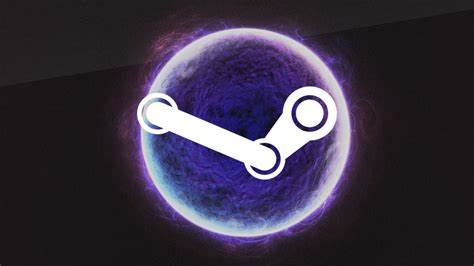

Steam is a video game digital distribution service and storefront by Valve. It was launched as a software client in September 2003 as a way for Valve to provide automatic updates for their games, and expanded to distributing and offering third-party game publishers' titles in late 2005. Steam offers various features, like digital rights management (DRM), game server matchmaking, anti-cheat measures, social networking and game streaming services. It provides the user with automatic game updating, saved game cloud synchronization, and community features such as friends messaging, in-game chat and a community market. Valve released a freely available application programming interface (API) called Steamworks in 2008, which developers can use to integrate Steam's functions into their products, including in-game achievements, microtransactions, and user-created content support. Initially developed for Microsoft Windows operating systems, Steam was released for macOS in 2010 and Linux in 2012. Mobile apps to access online Steam features were first released for iOS and Android in 2012. The platform also offers other digital content and Valve gaming hardware, including productivity software, game soundtracks, videos and VR headset Valve Index. The service is the largest digital distribution platform for PC gaming, estimated around 75% of the market share in 2013 according to IHS Screen Digest.[2] By 2017, users purchasing games through Steam totaled approximately US$4.3 billion, representing at least 18% of global PC game sales according to Steam Spy.[3] By 2021, the service had over 34,000 games with over 132 million monthly active users.[4] The success of Steam has led to the development of the Steam Machine line of gaming PCs in 2015, which includes the SteamOS operating system and Steam Controller, Steam Link devices for local game streaming, and the handheld Steam Deck tailored for running Steam games in 2022.
